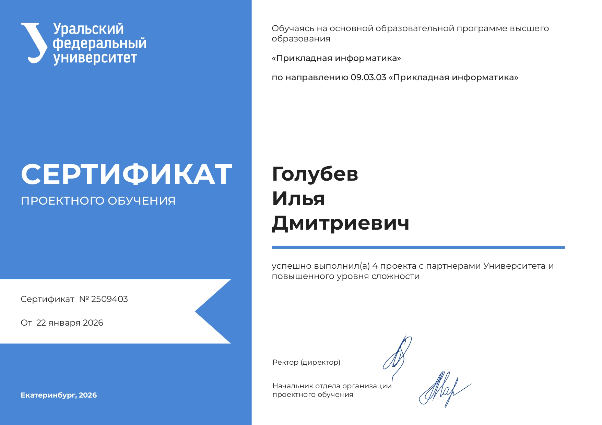
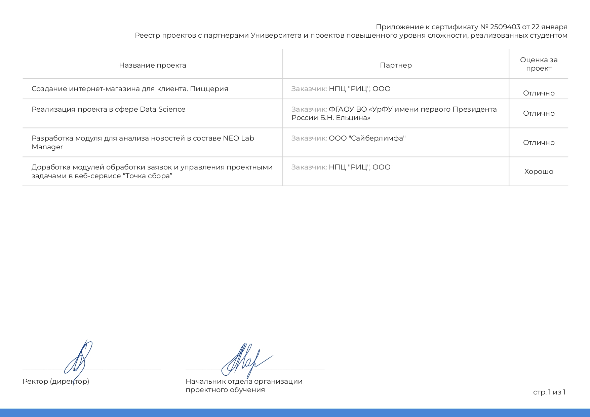

Ключевые компетенции
Инструменты ИИ
LLM (GPT, Claude, DeepSeek)
Prompt engineering
Написание собственных моделей
Автоматизация процессов
Чат-боты
Обработка документов
API-интеграция
Скриптинг (Python)
Данные и бэкенд
Python (pandas, requests)
SQL
REST API
Git
Системный анализ
BPMN 2.0
ERD / UML
ArchiMate
ГОСТ 34
Проекты и опыт работы
HTML, CSS, JavaScript, Figma
-
Руководил командой из 4 человек на протяжении всего цикла
разработки.
- Провёл сбор и анализ требований к MVP веб-сайта.
- Разработал прототипы и утвердил их с заказчиком.
-
Организовал процесс разработки и контролировал соблюдение сроков.
Python, PyTorch, Jupyter Notebook, Computer Vision
-
Руководил командой из 3 человек, выступал в роли тимлида и
системного аналитика.
-
Разработал LLM-модель для сегментации заболеваний на КТ-снимках
печени.
- Лично собрал и разместил датасет для обучения модели.
-
Всю разработку вёл в Jupyter Notebook, включая предобработку
данных и обучение.
-
Провёл анализ предметной области и формализовал требования
заказчика.
-
Составил техническое задание и контролировал выполнение этапов.
Python, GigaChat API, SQLite
-
Руководил командой, анализировал клиентский путь и формализовал
бизнес-логику.
-
Разработал телеграм-бота, способного отвечать на вопросы клиентов
с помощью GigaChat.
- Настроил сбор и обработку данных о клиентских запросах.
-
Внедрил систему промпт-шаблонов для повышения качества ответов.
Python, NLP, классификация, API
-
Руководил командой из 4 человек, выполнял функции тимлида и
аналитика.
-
Провёл анализ требований заказчика к системе классификации
новостей.
-
Автоматизировал сбор данных через внешние API и настроил пайплайн
обработки.
-
Интегрировал модель в корпоративную систему заказчика для
регулярной аналитики.
- Составил техническую документацию по итогам проекта.
BPMN 2.0, ERD, ArchiMate, ГОСТ 34, SQL
-
Руководил командой, выполнил полный цикл системного анализа и
проектирования.
-
Провёл анализ текущего бизнес-процесса организации стажировок
(2019–2026), выявил системные проблемы.
-
Сформулировал и структурировал функциональные и нефункциональные
требования.
-
Построил модели бизнес-процессов в BPMN 2.0 и разработал
пользовательские сценарии для 3 ролей.
-
Спроектировал архитектуру сервиса в ArchiMate (7 слоёв) и
логическую схему БД (ERD).
-
Составил техническое задание по ГОСТ 34 и провёл функциональное
тестирование MVP.
-
Результат: внедрённый веб-сайт, документация, снижение
операционных издержек заказчика.
Образование и сертификаты
Уральский федеральный университет им. Б.Н. Ельцина,
Екатеринбург
09.03.03 Прикладная информатика (2022–2026)
Сертификат проектного обучения

Титульник (нажмите для увеличения)

Портфолио (нажмите для увеличения)
Обо мне
Выпускник IT-направления, специализируюсь на системном анализе и
внедрении ИИ в бизнес-процессы. За время обучения руководил 5
проектными командами, во всех выступал в роли тимлида. Владею методами
системного анализа (BPMN, ERD, ArchiMate), умею формализовать
требования и составлять техническую документацию. Имею опыт разработки
на Python, работы с SQL и API, создания чат-ботов и автоматизации
рутинных процессов. Ищу позицию, где смогу применять навыки анализа и
автоматизации для решения прикладных бизнес-задач.